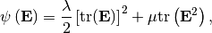
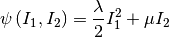
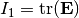
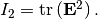
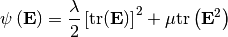
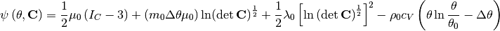
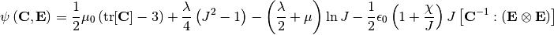

cell_material.py¶
- Overview
- Definition Steps
- Call the defined material
- Typical Example (Saint-Venant Kirchhoff Material)
- Material Library
- Neo Hookean Type Electroactive Polymer
Overview¶
The main class of this file is class Material, which defines a material through material free energy function. Material free energy function in the implementation is a function of invariants. Plasticity and viscosity are not included in the current state.
Definition Steps¶
- setup free energy function psi
- relations between invariants [invar1, invar2, ...] and physical variables [C, F, E, M, T, ...]
- initialize material with free energy function and a list of constants
- use class member method invariant_generator_append() to pass invariants relation into the initialized material
Note that step 3 and step 4 can be unified by direct calling
Material(psi, [parameter1, ...], [invariant1_dependency_tuple, ...], [invariant_generator1, ...])
Detailed examples are given in the following part
Call the defined material¶
The name of a defined material can be called directly, since the internal __call__() method is implemented. The corresponding arguments are the physical variables for this material. Then a material instantiation is complete with its energy depending on physical variables.
Typical Example (Saint-Venant Kirchhoff Material)¶
Material energy function is

where is the Green-Lagrange Tensor,  and
and  are Lame constants. Detailed illustration can be viewed
here.
are Lame constants. Detailed illustration can be viewed
here.
If the energy is represented by means of invariants, the energy and invariants can be formulated as

with , and 
So the material definition according to the above steps is
from dolfin import *
import sys
sys.path.append('../')
import cell_material as mat
# Step1: Energy function
def psi(inv, lmbda, mu):
return 0.5 * lmbda * (inv[0]) ** 2 + mu * inv[1]
# Step2: Invariants
def invariant1(F):
dim = F.geometric_dimension()
I = Identity(dim)
C = F.T * F
E = 0.5 * (C - I)
return tr(E)
def invariant2(F):
dim = F.geometric_dimension()
I = Identity(dim)
C = F.T * F
E = 0.5 * (C - I)
return tr(E.T * E)
# Step3: Initialization of material
mu = 7.6e10
lmbda = 9.7e10
# Instantiation with energy function and material parameters
svk = mat.Material(psi, [lmbda, mu])
# Step4: Pass invariants generator
# Feed the invariant generators
svk.invariant_generator_append((0,), [invariant1, invariant2])
Step 3 and step 4 can be combined to the following
svk = mat.Material(psi, [lmbda, mu], [(0,)], [[invariant1, invariant2]])
The call of Saint-Venant Kirchhoff Material is just to plug in the field
variable 
# Generate field variable
mesh = UnitSquareMesh(2, 2)
TFS = TensorFunctionSpace(mesh, 'CG', 1)
F = Function(TFS)
# Complete instantiation of material
svk([F])
Material Library¶
Three different materials are implemented in the material library, where we do not need to define the energy function and related invariants. The required input left consists of material parameters and their physical field variables.
These three materials Saint Venant-Kirchhoff Material, Simo-Pister Material, and Neo Hookean Type Electroactive Material. Their energy functions are as follows
Saint Venant-Kirchhoff Material

Simo-Pister Material

It describes the behaviour of thermo elastic material and
 represents temperature. This material is taught in the
course Hoehere Mechanik 3
represents temperature. This material is taught in the
course Hoehere Mechanik 3Neo Hookean Type Electroactive Material

This energy function describe the behaviour in the coupled field, mechanical behaviour and electrical behaviour, where is the Green-Lagrange tensor, while right Cauchy-Green tensor. The material model is referred in the paper of ...
It is possible to add other material models in the current material library. One should implement the free energy function, invariants by oneself.
Neo Hookean Type Electroactive Polymer¶
The realization of Neo Hookean Type Electroactive Polymer is given below
def neo_hook_eap(E_m, nu_m, kappa, epsi0=8.85e-12):
"""
Neo-Hookean-type EAP from 'Keip, Steinmann, Schroeder, 2014, CMAME'
:param E_m: Young's Modulus
:param nu_m: Poisson ratio
:param epsi0: Vacuum Permittivity
:param kappa: Electric Susceptivity
:return: Matrial nh_eap
"""
miu = E_m / (2 * (1 + nu_m))
lmbda = E_m * nu_m / ((1 + nu_m) * (1 - 2 * nu_m))
def psi(inva, miu, lmbda, kappa, epsi0):
mech_term = 0.5 * miu * (inva[0] - 3) + lmbda / 4 * (inva[1] ** 2 - 1) - \
(lmbda / 2 + miu) * ln(inva[1])
couple_term = -1 / 2 * epsi0 * (1 + kappa / inva[1]) * inva[1] * inva[2]
return mech_term + couple_term
nh_eap = Material(psi, [miu, lmbda, kappa, epsi0])
def sqr_tr(F):
return tr(F.T * F)
nh_eap.invariant_generator_append((0,), [sqr_tr, det])
couple_invar_gen = lambda F, E: inner(inv(F.T * F), outer(E, E))
nh_eap.invariant_generator_append((0, 1), [couple_invar_gen])
return nh_eap